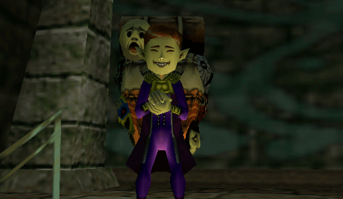
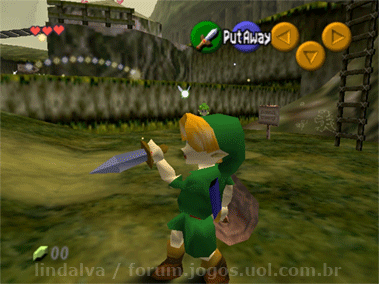
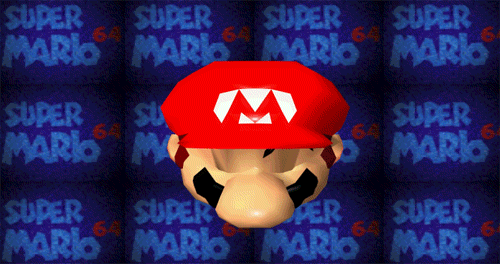

The N64!!!
Quick information
There is a special quote out there that describes just how amazing The N64 is.
"OH MY GOSH!!!! NINTENDO SIXTY FOOOOOOUUURR!!!!!!"
After screaming and freaking out for several minutes, the child proceeds
to open
his other Christmas gifts
while occasionally looking at his new N64.
My all time favorite games:
-
The Legand of Zelda: Majora's Mask (With the happy mask salesman being the best character)

-
The Legand of Zelda: Ocarina of Time

-
Super Mario 64

Although they no longer mass produce and sell N64s, there is a way to play N64 games on your computer.
For example if you have a computer with decent specs you can use an emulator.
One of the most popular is Project 64, which is free to free to download and easy to use.
The only thing you need to do is download free roms for whatever classic you wish to play.